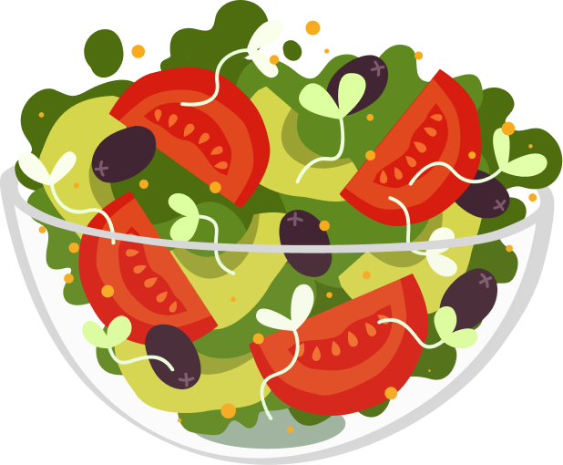

О вкусной
и здоровой еде
Питание является одним из основных условий существования человека, а проблема питания — одной из основных проблем человеческой культуры.

Питание является одним из основных условий существования человека, а проблема питания — одной из основных проблем человеческой культуры.
Основы
Правильно
организованное питание
В числе задач, стоящих перед пищевой промышленностью и предприятиями общественного питания, имеются, в частности, и такие, как увеличение производства консервированных фруктов и овощей для максимально возможной ликвидации сезонных спадов в их потреблении; рост использования бобовых; увеличение потребления населением океанской рыбы; постепенное вытеснение водки виноградным вином и пивом; расширение производства фруктовых и ягодных соков.
В числе задач, стоящих перед пищевой промышленностью и предприятиями общественного питания, имеются, в частности, и такие, как увеличение производства консервированных фруктов и овощей для максимально возможной ликвидации сезонных спадов в их потреблении; рост использования бобовых; увеличение потребления населением океанской рыбы; постепенное вытеснение водки виноградным вином и пивом; расширение производства фруктовых и ягодных соков.
В числе задач, стоящих перед пищевой промышленностью и предприятиями общественного питания, имеются, в частности, и такие, как увеличение производства консервированных фруктов и овощей для максимально возможной ликвидации сезонных спадов в их потреблении; рост использования бобовых; увеличение потребления населением океанской рыбы; постепенное вытеснение водки виноградным вином и пивом; расширение производства фруктовых и ягодных соков.
Нормативы
Нормативы
правильного питания
Список нормативов от 12.04.1957
Список нормативов от 12.04.1957
Список нормативов от 12.04.1957
Список нормативов от 12.04.1957